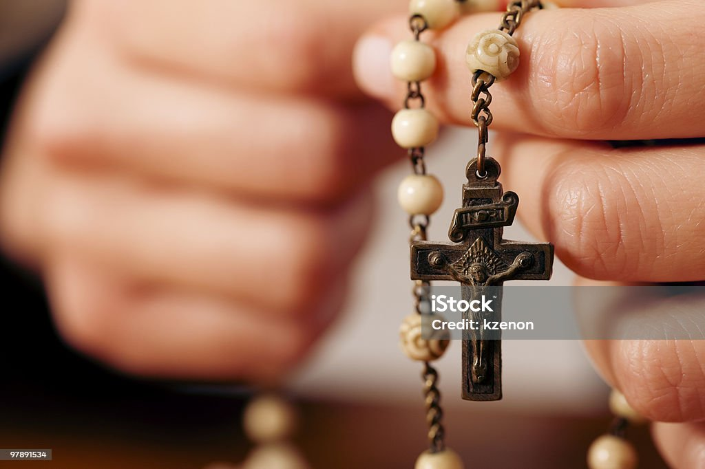

가톨릭(Catholic) 또는 천주교는 로마의 주교[4]이자 바티칸 시국의 국가원수[5]인 교황(敎皇)을 수장으로 하는 그리스도교 교단이며, 성좌와 일치하는 교회를 통틀어 가리킨다.
정교회와 함께 그리스도교 역사상 가장 오래된 교단이다.
'가톨릭 교회'라고 불리지만, 교황좌가 있는 로마를 중심으로 하기 때문에, '로마 가톨릭 교회'라 불리기도 한다.
'교회(church)'는 본래 그리스도교 신앙 공동체를 뜻하는 것이나 대한민국에서는 개신교의 예배 장소와 구별하기 위해 건물 이름에 '성당'이라는 단어를 넣거나 '천주교(가톨릭) ○○교회', '○○ 천주교회' 같은 명칭을 쓴다.
가톨릭 내부적으로는 '교회'는 오직 가톨릭만을 의미하기에 가톨릭 교회를 그냥 '교회'라고 자칭한다.